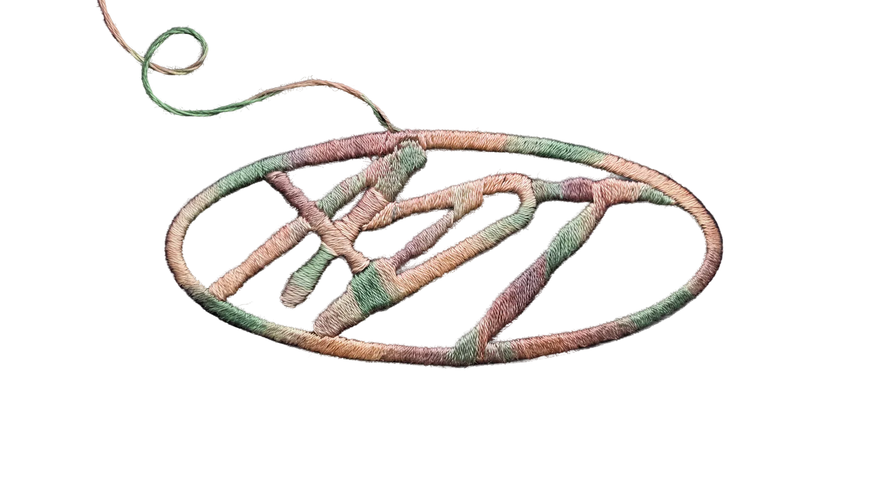

Принципы
Это принципы Центра дизайна Авито. Они описывают наш взгляд на работу, продукт, пользователей и на самих себя. Благодаря общим принципам мы мыслим и действуем схожим образом, создаём лучший продукт, ценим друг друга и получаем удовольствие от работы.
Весь продукт —
Сделать и получить результат.
Системность.
Простота
по умолчанию.
Человечность
и характер в каждой детали.
AI FIRST.
Весь продукт—
наш продукт
Мы отвечаем за отношения пользователя и продукта — вчера, сегодня и завтра, в любом
сценарии или корнер-кейсе. Поэтому каждый наш макет, текст и исследование — это часть
целого,
а не отдельная задача. Если мы видим критичный недостаток, ищем способ
исправить его, даже если он «чужой».
Сделать и получить результат
Чем раньше идея начинает приносить пользу и прибыль —
тем лучше. Реальный эффект на проде важнее бесконечной полировки в макете. Поэтому мы
доводим решения до продакшена с понятными критериями качества и успеха и принимаем
разумные компромиссы, если они помогут быстрее сделать
что-то хорошее для пользователей.
Системность
Мы опираемся на дизайн-систему, единые паттерны и процессы, делаем решения реализуемыми
и повторяемыми, избегаем уникальности, если она не оправдана. Всегда думаем
о масштабировании: как решение поведёт себя при росте аудитории или расширении
функциональности.
Простота
по умолчанию
Мы стремимся убирать лишнее и упрощать:
в продукте, в процессах, в коммуникации. Добиваемся результата простыми изящными
решениями.
Человечность
и характер
в каждой детали
Мы не только помогаем пользователям решать прикладные задачи, мы проявляем заботу и эмпатию, чтобы создавать тот характер продукта, который легко узнать и полюбить.
AI FIRST
Если что-то можно сделать при помощи AI — мы делаем это при помощи AI. Понимаем специфику инструментов, их возможности и ограничения, экспериментируем и ищем новые способы стать быстрее и эффективнее.
1 / 6
FAQ
Что такое принципы ADT?
Принципы — это практические ориентиры, которые помогают дизайнерам, исследователям и редакторам принимать решения в ежедневной работе. Они описывают наш общий взгляд на продукт, пользователей, работу и на самих себя и помогают нам мыслить и действовать схожим образом.
Зачем нам принципы, если у Авито уже есть ценности?
Ценности задают общий способ работы в компании — отвечают на вопрос «Как мы работаем?». Принципы ADT конкретизируют эту культуру для нашей профессиональной практики и отвечают на вопрос «Как мы создаём опыт пользователя?». Они переводят культуру в конкретные решения.
Что принципы дают мне как IC в ежедневной работе?
Принципы дают общую систему координат для принятия решений. Они помогают проверять собственные решения, аргументировать их на ревью и обсуждать работу с коллегами не на уровне «нравится / не нравится», а через общие ориентиры качества. А ещё — лучше понимать, чего ADT ожидает от подхода к работе независимо от команды и продукта.
Что принципы дают менеджеру в ежедневной работе?
Принципы дают менеджеру общую рамку для обсуждения качества работы и развития команды. На них можно опираться в обратной связи, дизайн-ревью и разговорах о профессиональном росте — не через личные предпочтения менеджера, а через единые для ADT ориентиры. По мере интеграции принципов в Competency Matrix, Performance Review и Playbook эта рамка будет становиться частью системной работы с командой.
Нужно ли применять все шесть принципов в каждой задаче?
Принципы — не чек-лист, в котором нужно механически поставить шесть галочек. В разных задачах одни принципы будут проявляться сильнее других. Их задача — помогать принимать решения и видеть важные аспекты продукта, которые иначе можно упустить.
Что делать, если разные принципы подсказывают разные решения?
Принципы не заменяют профессиональное суждение и контекст. Например, стремление к системности может вступить в напряжение с необходимостью быстро получить результат. В таком случае принципы помогают увидеть компромисс и осознанно его обсудить, а не дают универсальный «правильный ответ».
«Весь продукт — наш продукт» означает, что мы отвечаем вообще за всё?
Мы отвечаем за отношения пользователя с продуктом целиком, а не только за границы конкретного макета или задачи. Это не значит, что нужно самостоятельно исправлять всё вокруг. Но если мы видим критичный недостаток, принцип предполагает не игнорировать его как «чужой», а искать способ повлиять на решение.
«Сделать и получить результат» означает, что скорость важнее качества?
Нет. Принцип говорит о том, что реальный эффект на проде важнее бесконечной полировки решения в макете. Мы доводим решения до продакшена с понятными критериями качества и успеха и можем принимать разумные компромиссы, если они помогают быстрее принести пользу пользователям.
Не противоречат ли «Системность» и «Человечность и характер» друг другу?
Нет. Системность помогает создавать реализуемые, повторяемые и масштабируемые решения и избегать неоправданной уникальности. При этом человечность и характер требуют не сводить продукт только к утилитарному решению задачи — проявлять заботу и создавать узнаваемый характер продукта. Вместе эти принципы задают важный баланс: характер не ради уникальности, а система — не ради безликости.
AI First означает, что AI нужно использовать в каждой задаче?
Формулировка принципа — «если что-то можно сделать при помощи AI, мы делаем это при помощи AI». При этом важная часть принципа — понимать специфику инструментов, их возможности и ограничения. То есть речь не только об использовании AI, но и об осознанном владении им, экспериментах и поиске способов становиться быстрее и эффективнее.
Принципы — это просто рекомендации или они станут частью рабочих процессов?
Принципы задуманы как фундамент более широкой системы, а не как декларация. На их основе развиваются Competency Matrix, Performance Review, Design Review, Playbook, чек-листы, onboarding и другие инструменты. Так принципы постепенно становятся частью того, как ADT принимает решения, развивает людей и масштабирует качество дизайна.